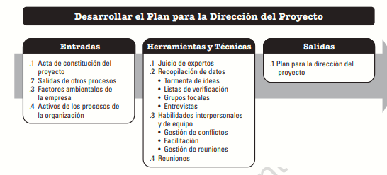
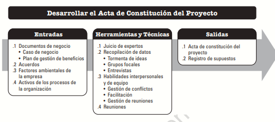

En la fase de planeación se determina, prepara y coordina todos los componentes del plan y así mismo se consolidan en un plan integral para la dirección del proyecto. La clave de esta fase es la producción de un documento que define la base para toda la construcción del proyecto y la forma en que se realizará el trabajo.
A continuación se ilustra el proceso para desarrollar el plan para la dirección del proyecto, es importante aplicar todo lo descrito anteriormente en fase de definición

Este proceso se lleva a cabo una única vez o en puntos predefinidos del proyecto. En la siguiente grafica se muestran las entradas, herramientas y técnicas y salidas del proceso.

Las relaciones que se pueden dar en proyectos de más de una fase pueden relacionarse de diferentes formas, secuencial, paralela o en superposiciones que tendrán variaciones dependiendo de las características de desarrollo del proyecto
.